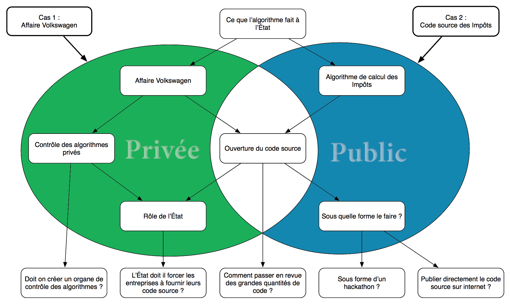

Devant les questions posées par nos deux études de cas, la question du rôle de l’Etat par rapport aux algorithmes est soulevée. « Qu’est-ce que l’algorithme fait à l’était » signifie donc quelle réaction à l’Etat face au problème des algorithmes, mais aussi quelles mesures il prend préventivement.
Volkswagen a, depuis 2009, créé un algorithme tricheur caché dans les ordinateurs de contrôle de leurs voitures, qui détecte les conditions de tests environnementaux et modifie les consommations du moteurs afin de se conforter aux normes.
Le calcul des impôts est extrêmement complexe. Malgré l’existence d’un code complet des impôts sous forme de textes de lois, le calcul lui-même est éclaté dans différentes parties de l’administration. Il s’agit ici de tout regrouper en algorithme accessible au public.
L’Etat désire avoir la possibilité de contrôler les algorithmes issus du milieu privé, comme souligné par l’affaire Volkswagen. Les entreprises, elles, revendiquent la propriété intellectuelle et le secret industriel. Le contrôle et la propriété intellectuelle sont-ils pourtant incompatibles ?
L’ouverture du code source est une problématique commune aux deux études de cas. Dans le cas des impôts cette ouverture a pour but une utilisation publique et anonyme, tandis que dans le cas de Volkswagen, il s’agit de créer un accès au code, mais pour qui ?
C’est à l’Etat d’adopter des textes établissant un système de contrôle des algorithmes. Les détails d’un tel système restent flous, et les définir revient à apporter une réponse à notre interrogation initiale du rôle de l’Etat par rapport aux algorithmes.
Décider d’ouvrir le code source est une chose, définir les spécificités de cette ouverture en est une autre. Dans quel langage devraient être écrits les programmes de calculs, à quel point doit-il être accessible et réutilisable par le grand public ? Faut-il le rendre lisible ?